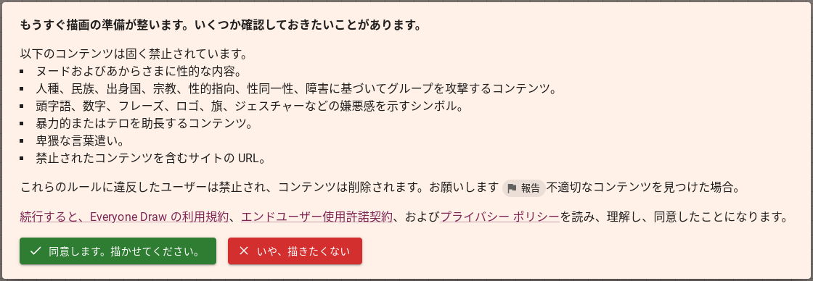

| google系 | 説明 |
|---|---|
| googleドライブ | googleが提供するオンラインストレージサービス |
| googleドキュメント | googleが提供する文書作成サービス |
| googleスプレッドシート | googleが提供する表計算ソフト |
| googleスライド | googleが提供するプレゼンテーションソフト |
| googleフォーム | googleが提供するフォーム作成ソフト |
| googleサイト | googleが提供するオリジナルサイト作成サイト |
| Web Maker | googleが提供するブラウザhtmlエディター |
| Microsoft系 | 説明 |
|---|---|
| Microsoft 365 | Microsoftが提供する文書作成、表計算、プレゼンテーションなどのサービスがあるサイト |
| タイピング系 | 説明 |
|---|---|
| P検 | タイピング検定のサイト |
| 寿司打 | タイピングが練習できるサイト |
| プログラミング系 | 説明 |
|---|---|
| Progate | プログラミングがスライド形式で学べて、実際にコードを書きながら覚えられるサイト（2023年９月28日現在、ほとんどが有料となっています） |
| Skillhub | プログラミングが学べる初心者向け学習サイト |
| CODEPREP | 「ブック」というものを使ってプログラングを学べるサイト。実践的な問題もある |
| Zenn | エンジニアのための情報共有コミュニティー |
| Replit | オンラインIDE |
| Visual Studio Code for web | Visual Studio Codeのweb版。本家と比べると使えない拡張機能が多いなど制約あり |
| codepen | オンラインコードエディター |
| Runstant | オンラインコード（html）エディター |
| Liveweave | オンラインのhtmlエディター。html以外にもcss、javaScriptが記述できるサイト。リアルタイムプレビュー機能もある |
| p5.js | JavaScriptライブラリ |
| Github | ソフトウェア開発のプラットフォーム |
| Scratch | 直感的にプログラミングができるサービス |
| 作曲系 | 説明 |
|---|---|
| Flat | パソコン上（スマホ、タブレットでも可）で楽譜が書けるサイト |
| bandlab | 打ち込みや録音などで曲が作れるサイト |
| Sound Quest | 音楽理論が学べる学習サイト |
| デザイン系 | 説明 |
|---|---|
| Canva | 様々なデザインが作れるサイト |
| 文学関係 | 説明 |
|---|---|
| ストーリープロッター | 本のプロットが作れるサイト |
| Nola | 小説を執筆できるサイト |
| Romancer | 電子書籍が作れるサイト |
| bccks | 電子書籍が作れるサイト |
| Manybooks | ５万冊以上の洋書が無料で読めるサイト。※一部有料あり |
| FontStruct | オリジナルフォントを作ることができるサービス |
| 動画編集系 | 説明 |
|---|---|
| Clipchamp | 動画編集ができるサイト。無料プランでは制限あり |
| 学習系 | 説明 |
|---|---|
| Fluenday | 英語、フランス語、スペイン語をテレビ番組や映画などのクリップなどから楽しく学べる学習サイト。アプリ版もある |
| 辞書系 | 説明 |
|---|---|
| Weblio国語辞典 | 国語辞典サイト |
| Weblio英和辞典・和英辞典 | 英和・和英辞典サイト |
| 資格系 | 説明 |
|---|---|
| 英ナビ！ | 英検についてのサイト。合否も確認できる |
| 過去問.com | 様々な試験の過去問が見れたり、予想問題が解けるサイト |
| 過去問.com 英検予想問題ページ | 過去問.comの英検の予想問題が解けるページ |
| アプリ系 | 説明 |
|---|---|
| Bubble | ノーコードでアプリ開発ができるサイト。※無料プランでは制限あり（サービスリリースができない） |
| お遊びサイト | 説明 | 説明 |
|---|---|---|
| Everyone Draw | 自分でドット絵が書けたり、他の人が書いたドット絵が見れるサイト | ※新しい真っ白なキャンバスに絵を描くには、右上メニューからStart new drawingをクリック |
| 説明 | 説明 | 説明 |
|---|---|---|
| ※マナーを守りながら楽しみましょう。 |  | 利用規約 |
| AI系 | 説明 |
|---|---|
| chatGPT | AIと対話できるサービス。最新版は有料。サイトのソースコードを書いてもらうなど様々な使い方が可能 |
| リートン | 無料でGPT-4が使えるサービス |
| Create | 要望を入力するとAIが自動でサイトのソースコードを生成してくれるサービス |
もしよろしければこちらのサイトも覗いてくださると嬉しいです
| 自作サイト | 説明 |
|---|---|
| blogger84039のほーむぺーじ | blogger84039のホームページ |
| カード本棚 | 数分で読めるカードサイズのミニ小説を投稿しているサイト。現在投稿一時停止中 |
| ただひょーじ | ボックスに入力された内容をただ表示するだけのサイト |
| ただめも！ | ただのメモサイト |
| ２進数時計 | 現在時刻を２進数で表示するだけという世界一無駄（自称）なサイト |
| ガチャガチャ | ただのガチャガチャ |
| ただのパスワード認証 | ただパスワード認証ができるだけのサイト |
| 消防シミュレーション | 消防の指令室のシミュレーション？的な？サイト |
| 簡易文書作成サイト | 簡易的な文書を作成することができるサイト |